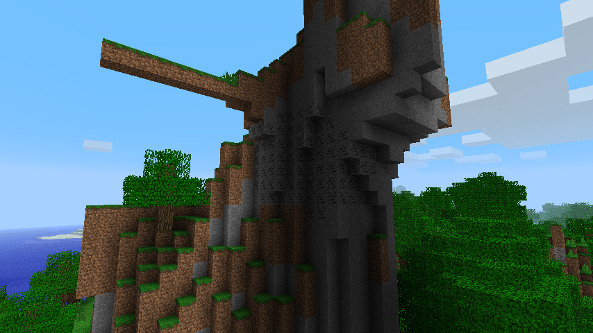

about
This mod changes ore generation to make ore
pockets much less common, but also much larger.
Combine with mining rebalance
to have fun constructing large mines and other
infrastructure.
Also removes dirt pockets from the lower strata
of the world.
compatibility
Anything that edits ChunkProviderGenerate
(yf.class) is incompatible.
download
version 0.1
<< home